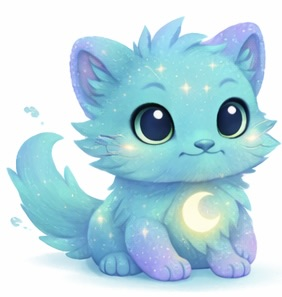

Three Sides — MY PET
🌟 Care for Your
Pet Friend 🌟

Hi, I'm your wellness buddy!
Let's grow together 🌻
Journal to feed your pet...
Thanks for journaling today,
your mind thanks you! 🐾
Did you drink water today?
Thanks for drinking water today,
your body thanks you!
Did you do something kind
for yourself today?
Thanks for your kindness today!
You’re all set!
Come back tomorrow to care for your pet 🐾